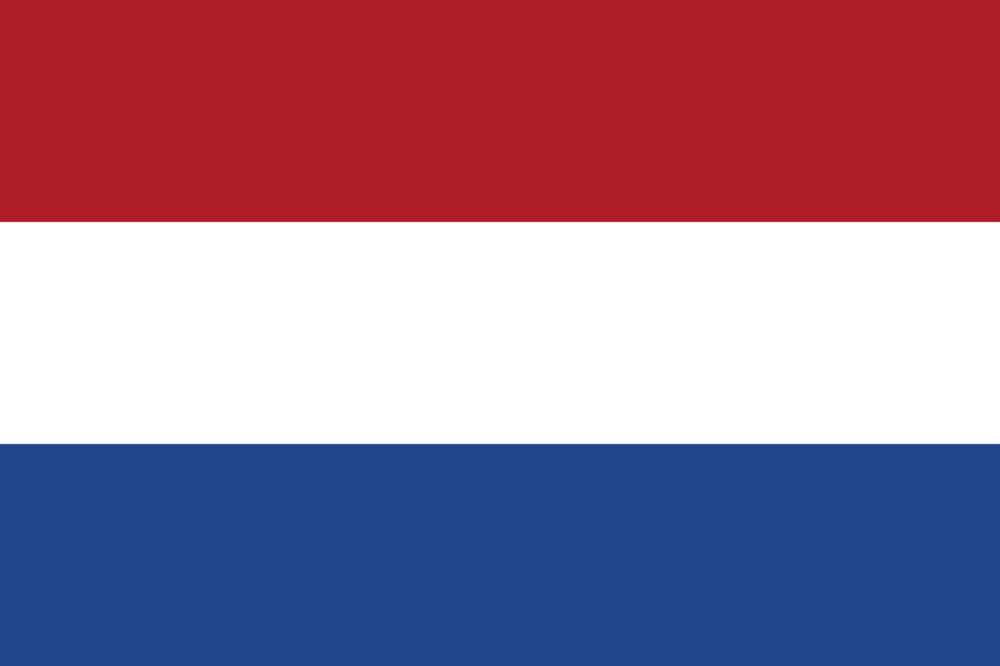

Benieuwd naar de kalender van alle races voor dit jaar?
Het seizoen van 2023 telt in totaal 21 raceweekenden. Hiermee is dit het langste seizoen ooit in de geschiedenis van de MotoGP. Normaal gesproken zou de eerste race zich vestigen in Qatar, maar door een verbouwing in Losail is deze verplaatst naar Portugal. Tussen alle vertrouwde Grands Prix is er ook een nieuw circuit te vinden, namelijk die van India. Op het (nieuwe) circuit van India zal er 24 september geraced worden. (zie de tabel hieronder voor alle data)
| Datum | Land | Circuit |
| 26 Maart 2023 |  Portugal Portugal | Portimao |
| 2 April 2023 |  Argentinë Argentinë | Termas de Rio Hondo |
| 16 April 2023 |  Amerika Amerika | Circuits of the Americas |
| 30 April 2023 |  Spanje Spanje | Jerez |
| 14 Mei 2023 |  Frankrijk Frankrijk | Le Mans |
| 11 Juni 2023 |  Italië Italië | Mugello |
| 18 Juni 2023 |  Duitsland Duitsland | Sachsenring |
| 25 Juni 2023 |  Nederland | TT Circuit |
| 9 Juli 2023 |  Kazachstan Kazachstan | Sokol |
| 6 Augustus 2023 |  Groot-Brittanië Groot-Brittanië | Silverstone |
| 20 Augustus 2023 |  Oostenrijk Oostenrijk | Red Bull Ring |
| 3 September 2023 | Catalunya | Montmeló |
| 10 September 2023 | San Marino | Misano |
| 24 September 2023 | India | Buddh |
| 1 Oktober 2023 |  Japan Japan | Twin Ring Motegi |
| 15 Oktober 2023 | Indonesië | Mandalika |
| 22 Oktober 2023 |  Australië Australië | Philip Island |
| 29 Oktober 2023 |  Thailand Thailand | , Buriram |
| 12 November 2023 | Maleisie | Sepang |
| 19 November 2023 |  Qatar Qatar | Losail |
| 26 November 2023 | Spanje | Valencia |